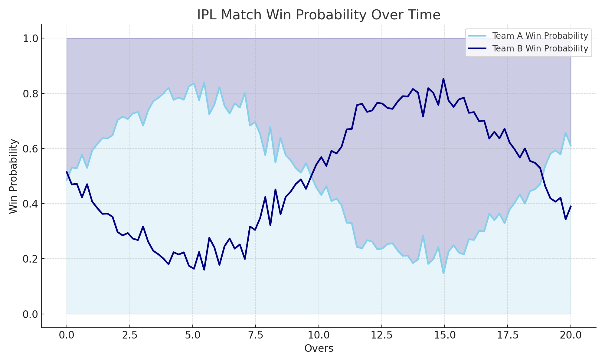

Projects
1. IPL Win Probability Predictor
Data Science Project at Sankyana Consultancy Services – This project involved building a machine learning model to predict the win probability of an IPL team in real time based on match conditions such as overs, wickets, and score...
